Gene set testing for Illumina HumanMethylation Arrays
Jovana Maksimovic, Alicia Oshlack and Belinda Phipson
March 31, 2020
Last updated: 2020-03-31
Checks: 7 0
Knit directory: methyl-geneset-testing/
This reproducible R Markdown analysis was created with workflowr (version 1.6.1). The Checks tab describes the reproducibility checks that were applied when the results were created. The Past versions tab lists the development history.
Great! Since the R Markdown file has been committed to the Git repository, you know the exact version of the code that produced these results.
Great job! The global environment was empty. Objects defined in the global environment can affect the analysis in your R Markdown file in unknown ways. For reproduciblity it’s best to always run the code in an empty environment.
The command set.seed(20200302) was run prior to running the code in the R Markdown file. Setting a seed ensures that any results that rely on randomness, e.g. subsampling or permutations, are reproducible.
Great job! Recording the operating system, R version, and package versions is critical for reproducibility.
Nice! There were no cached chunks for this analysis, so you can be confident that you successfully produced the results during this run.
Great job! Using relative paths to the files within your workflowr project makes it easier to run your code on other machines.
Great! You are using Git for version control. Tracking code development and connecting the code version to the results is critical for reproducibility.
The results in this page were generated with repository version 43ca6b6. See the Past versions tab to see a history of the changes made to the R Markdown and HTML files.
Note that you need to be careful to ensure that all relevant files for the analysis have been committed to Git prior to generating the results (you can use wflow_publish or wflow_git_commit). workflowr only checks the R Markdown file, but you know if there are other scripts or data files that it depends on. Below is the status of the Git repository when the results were generated:
Ignored files:
Ignored: .Rhistory
Ignored: .Rproj.user/
Ignored: analysis/figure/
Ignored: code/.job/
Ignored: code/old/
Ignored: data/
Ignored: output/compare-methods/
Ignored: output/random-cpg-sims/
Unstaged changes:
Modified: methyl-geneset-testing.Rproj
Note that any generated files, e.g. HTML, png, CSS, etc., are not included in this status report because it is ok for generated content to have uncommitted changes.
These are the previous versions of the repository in which changes were made to the R Markdown (analysis/exploreData.Rmd) and HTML (docs/exploreData.html) files. If you’ve configured a remote Git repository (see ?wflow_git_remote), click on the hyperlinks in the table below to view the files as they were in that past version.
| File | Version | Author | Date | Message |
|---|---|---|---|---|
| Rmd | 43ca6b6 | Jovana Maksimovic | 2020-03-31 | wflow_publish(“analysis/exploreData.Rmd”) |
| Rmd | 2bcb4c9 | JovMaksimovic | 2020-03-23 | New script and modifications for methylGSA analysis. |
| Rmd | 250d8ae | JovMaksimovic | 2020-03-16 | Comitting local changes. |
| Rmd | 24fb166 | Jovana Maksimovic | 2020-03-16 | Adding Rmd file changes. |
| Rmd | d7cd66e | Jovana Maksimovic | 2020-03-02 | Initial Commit |
library(here)
library(minfi)
library(paletteer)
library(limma)
library(BiocParallel)
library(reshape2)
library(gridExtra)
library(missMethyl)
library(ggplot2)
library(glue)
library(tidyverse)
library(rbin)
library(patchwork)
source(here("code/utility.R"))Load data
We are using publicly available EPIC data GSE110554 generated from flow sorted blood cells. The data is normalised and filtered (bad probes, multi-mapping probes, SNP probes, sex chromosomes).
# load data
dataFile <- here("data/GSE110554-data.RData")
if(file.exists(dataFile)){
# load processed data and sample information
load(dataFile)
} else {
# get data from experiment hub, normalise, filter and save objects
readData(dataFile)
# load processed data and sample information
load(dataFile)
}QC plots
# plot mean detection p-values across all samples
dat <- tibble::tibble(mean = colMeans(detP), cellType = targets$CellType)
ggplot(dat, aes(y = mean, x = cellType, fill = cellType)) +
geom_bar(stat = "identity") +
labs(fill = "Cell Type")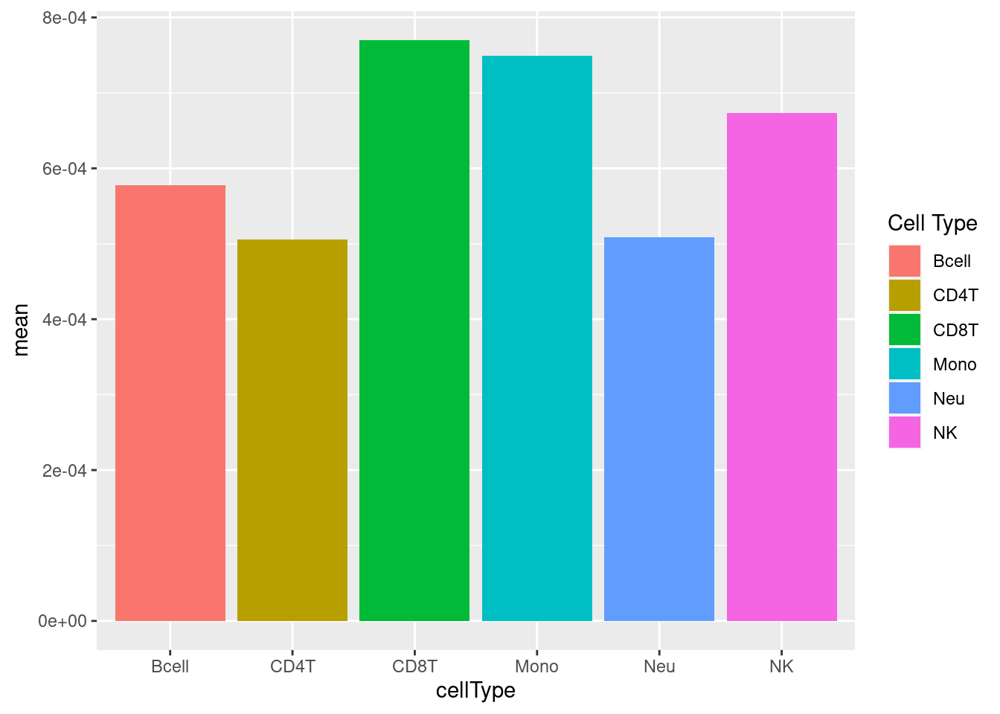
# plot normalised beta value distribution
bVals <- getBeta(normGr)
dat <- data.frame(reshape2::melt(bVals))
colnames(dat) <- c("cpg", "sample", "bVal")
dat <- dplyr::bind_cols(dat, cellType = rep(targets$CellType,
each = nrow(bVals)))
ggplot(dat, aes(x = bVal, colour = cellType)) +
geom_density() +
labs(colour = "Cell Type")
# MDS plots to look at largest sources of variation
p <- plotMDS(getM(fltGr), top=1000, gene.selection="common", plot = FALSE)
dat <- tibble::tibble(x = p$x, y = p$y, cellType = targets$CellType)
ggplot(dat, aes(x = x, y = y, colour = cellType)) +
geom_point() +
labs(colour = "Cell Type")
Statistical analysis
Compare several sets of sorted immune cells. Consider results significant at FDR < 0.05 and delta beta ~ 10% (~ lfc = 0.5).
mVals <- getM(fltGr)
bVals <- getBeta(fltGr)design <- model.matrix(~0+targets$CellType)
colnames(design) <- levels(factor(targets$CellType))
fit <- lmFit(mVals, design)
cont.matrix <- makeContrasts(CD4vCD8=CD4T-CD8T,
#BcellvMono=Bcell-Mono,
MonovNeu=Mono-Neu,
BcellvNK=Bcell-NK,
#NeuvNK=Neu-NK,
#MonovNK=Mono-NK,
levels=design)
fit2 <- contrasts.fit(fit, cont.matrix)
tfit <- eBayes(fit2, robust=TRUE, trend=TRUE)
tfit <- treat(tfit, lfc = 0.5)
pval <- 0.05
fitSum <- summary(decideTests(tfit, p.value = pval))
fitSum CD4vCD8 MonovNeu BcellvNK
Down 5072 9324 34803
NotSig 725611 712480 667559
Up 3202 12081 31523Examine only the independent contrasts.
dat <- melt(fitSum[rownames(fitSum) != "NotSig", ])
colnames(dat) <- c("dir","comp","num")
ggplot(dat, aes(x = comp, y = num, fill = dir)) +
geom_bar(stat = "identity", position = "dodge") +
labs(x = "Comparison", y = "No. DM CpGs (FDR < 0.05)", fill = "Direction")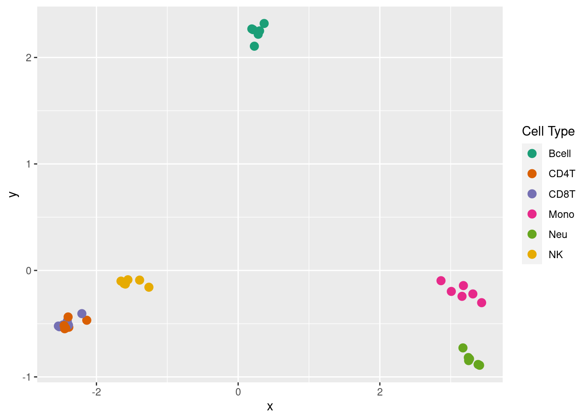
Test GO categories
Compare the gene set testing methods available for methylation arrays; hypergeometric test (HGT), gometh (best), methylRRA (GLM), methylRRA (ORA) and methylRRA (GSEA). As methylRRA does not work well with sets that only contain very few genes or very large sets, we will only test sets with at least 5 genes and maximum of 5000 genes. First test GO categories.
gometh
minsize <- 5
maxsize <- 5000
outFile <- here("data/blood.contrasts.rds")
if(!file.exists(outFile)){
obj <- NULL
obj$tfit <- tfit
obj$maxsize <- maxsize
obj$minsize <- minsize
obj$mVals <- mVals
obj$targets <- targets
saveRDS(obj, file = outFile)
} inFiles <- list.files(here("output/compare-methods"), pattern = "rds",
full.names = TRUE)
res <- lapply(inFiles, function(file){
readRDS(file)
})
dat <- as_tibble(dplyr::bind_rows(res))sub <- dat %>% filter(method %in% c("mmethyl.hgt", "mmethyl.gometh"))
ggplot(sub, aes(x = pvalue, colour = sub, linetype = method)) +
geom_density() +
facet_wrap(vars(contrast), ncol = 3) +
labs(colour = "Sig. CpGs", linetype = "Method", x = "P-value",
y = "Density") +
scale_color_hue(labels = c("Top 5000", "Top 10000", "FDR < 0.01",
"FDR < 0.05")) +
theme(legend.position = "bottom", legend.text = element_text(size=6))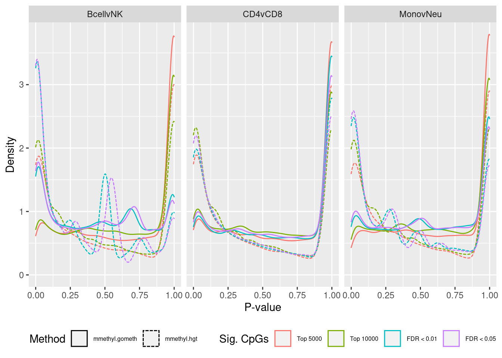
ann <- loadAnnotation("EPIC")
flatAnn <- missMethyl:::.getFlatAnnotation("EPIC", anno = ann)
cpgEgGo <- cpgsEgGoFreqs(flatAnn)cpgEgGo %>%
group_by(GO) %>%
summarise(med = median(Freq)) -> medCpgEgGo
dat %>% filter(set == "GO") %>%
filter(sub %in% c("n","c1")) %>%
inner_join(medCpgEgGo, by = c("ID" = "GO")) -> sub
bins <- rbin_quantiles(sub, ID, med, bins = 12)
sub$bin <- as.factor(findInterval(sub$med, bins$upper_cut))
binLabs <- paste0("<", bins$upper_cut)
names(binLabs) <- levels(sub$bin)
binLabs[length(binLabs)] <- gsub("<", "\u2265", binLabs[length(binLabs) - 1])
sub %>% group_by(contrast, method, bin) %>%
summarise(prop = sum(pvalue < 0.05)/n()) -> pdat
p <- ggplot(pdat, aes(x = as.numeric(bin), y = prop, color = method)) +
geom_line() +
facet_wrap(vars(contrast), ncol = 3) +
scale_x_continuous(breaks = as.numeric(levels(pdat$bin)), labels = binLabs) +
theme(axis.text.x = element_text(angle=45, hjust = 1, vjust = 1,
size = 7),
legend.position = "bottom") +
labs(x = "Med. No. CpGs per Gene per GO Cat. (binned)",
y = "Prop. GO Cat. with p-value < 0.05")
p
methylGSA
As we are comparing immune cells, we expect GO categories related to the immune system and its processes to be highly ranked. To evalue this, we downloaded all of the child terms for the GO category “immune system process” (GO:002376) from AminGO 2; http://amigo.geneontology.org/amigo/term/GO:0002376.
immuneGO <- unique(read.csv(here("data/GO-immune-system-process.txt"),
stringsAsFactors = FALSE, header = FALSE,
col.names = "GOID"))
dat %>% filter(set == "GO") %>%
filter(sub %in% c("n","c1")) %>%
arrange(contrast, method, pvalue) %>%
group_by(contrast, method) %>%
mutate(csum = cumsum(ID %in% immuneGO$GOID)) %>%
mutate(rank = 1:n()) %>%
filter(rank <= 100) -> sub
p <- ggplot(sub, aes(x = rank, y = csum, colour = method)) +
geom_line() +
facet_wrap(vars(contrast), ncol=3) +
geom_vline(xintercept = 10, linetype = "dotted") +
labs(colour = "Method", x = "Rank", y = "Cumulative no. immune sets") +
theme(legend.position = "bottom")
p
Examine what the top 10 ranked gene sets are and how many genes they contain, for each method and comparison.
terms <- missMethyl:::.getGO()$idTable
nGenes <- rownames_to_column(data.frame(n = sapply(missMethyl:::.getGO()$idList,
length)),
var = "ID")
dat %>% filter(set == "GO") %>%
filter(sub %in% c("n","c1")) %>%
arrange(contrast, method, pvalue) %>%
group_by(contrast, method) %>%
mutate(rank = 1:n()) %>%
mutate(FDR = p.adjust(pvalue)) %>%
filter(rank <= 10) %>%
inner_join(terms, by = c("ID" = "GOID")) %>%
inner_join(nGenes) -> subJoining, by = "ID"p <- vector("list", length(unique(sub$contrast)) * length(unique(sub$method)))
i = 1
for(cont in unique(sub$contrast)){
c = 1
for(meth in unique(sub$method)){
tmp <- sub %>% filter(contrast == cont & method == meth)
p[[i]] <- ggplot(tmp, aes(x = -log10(FDR), y = rank)) +
geom_point(aes(size = n), alpha = 0.5,
colour = scales::hue_pal()(length(unique(sub$method)))[c]) +
scale_y_continuous(labels = tmp$TERM, breaks = tmp$rank) +
labs(y = "", size = "No. genes", title = meth) +
theme(axis.text.y = element_text(size = 6),
plot.title = element_text(size = 8),
legend.position = "right",
legend.key.size = unit(0.25, "cm"),
legend.text = element_text(size = 6),
legend.title = element_text(size = 8),
axis.text.x = element_text(size = 6),
axis.title.x = element_text(size = 8)) +
coord_cartesian(xlim = c(-log10(0.99), -log10(10^-100))) +
geom_vline(xintercept = -log10(0.05), linetype = "dashed")
i = i + 1
c = c + 1
}
}
(p[[1]] / p[[2]] / p[[3]] / p[[4]] / p[[5]]) +
plot_annotation(title = unique(sub$contrast)[1],
theme = theme(plot.title = element_text(size = 10))) 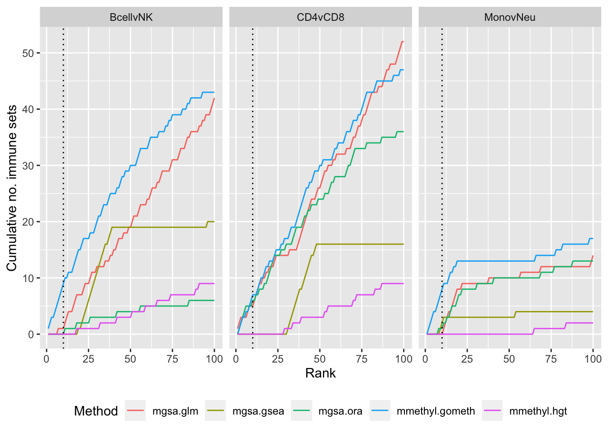
(p[[6]] / p[[7]] / p[[8]] / p[[9]] / p[[10]]) +
plot_annotation(title = unique(sub$contrast)[2],
theme = theme(plot.title = element_text(size = 10))) 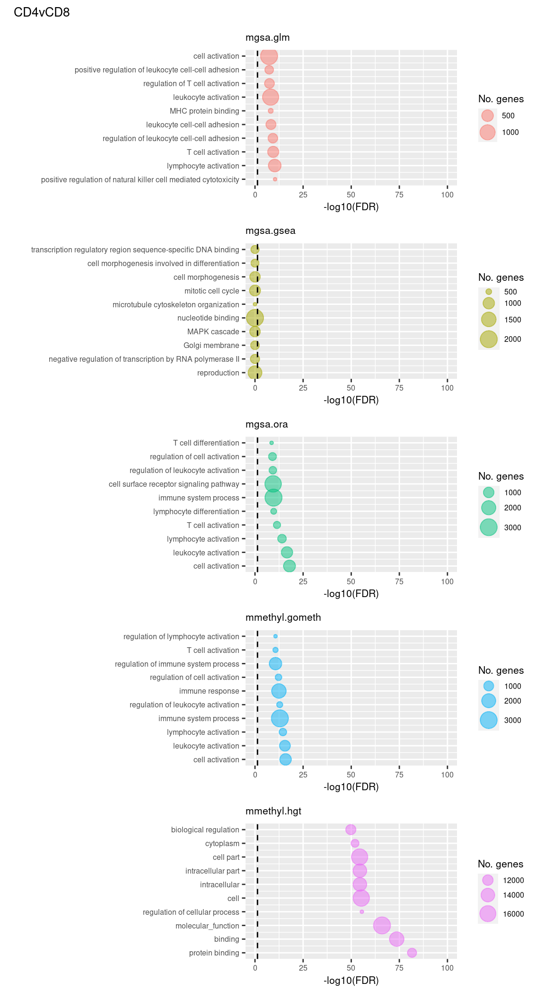
(p[[11]] / p[[12]] / p[[13]] / p[[14]] / p[[15]]) +
plot_annotation(title = unique(sub$contrast)[3],
theme = theme(plot.title = element_text(size = 10))) 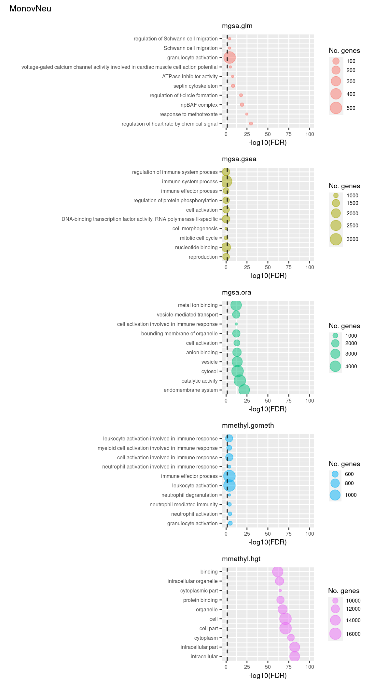
P-value histograms for the different methods for all contrasts on GO categories.
dat %>% filter(set == "GO") %>%
filter(sub %in% c("n","c1")) -> sub
ggplot(sub, aes(pvalue, fill = method)) +
geom_histogram(binwidth = 0.025) +
facet_grid(cols = vars(contrast), rows = vars(method)) +
theme(legend.position = "bottom") +
labs(x = "P-value", y = "Frequency", fill = "Method")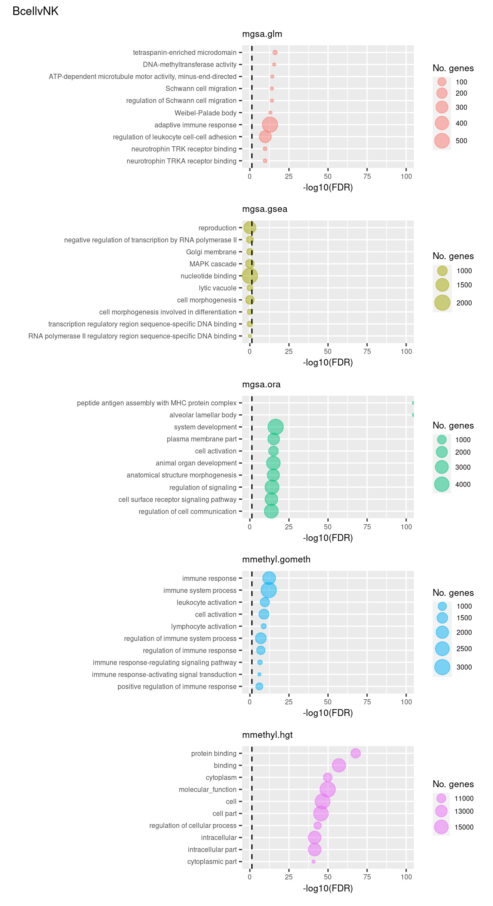
Test KEGG pathways
Now test KEGG pathways with at least 5 genes and 5000 at most.
Again, as we are comparing immune cells we expecte pathways from the following categories to be highly ranked: Immune system, Immune disease, Signal transduction, Signaling molecules and interaction; https://www.genome.jp/kegg/pathway.html.
immuneKEGG <- read.csv(here("data/kegg-immune-related-pathways.csv"),
stringsAsFactors = FALSE, header = FALSE,
col.names = c("ID","pathway"))
immuneKEGG$PID <- paste0("path:hsa0",immuneKEGG$ID)
dat %>% filter(set == "KEGG") %>%
filter(sub %in% c("n","c1")) %>%
arrange(contrast, method, pvalue) %>%
group_by(contrast, method) %>%
mutate(csum = cumsum(ID %in% immuneKEGG$PID)) %>%
mutate(rank = 1:n()) %>%
filter(rank <= 100) -> sub
p <- ggplot(sub, aes(x = rank, y = csum, colour = method)) +
geom_line() +
facet_wrap(vars(contrast), ncol=3) +
geom_vline(xintercept = 10, linetype = "dotted") +
labs(colour = "Method", x = "Rank", y = "Cumulative no. immune sets") +
theme(legend.position = "bottom")
p
Examine what the top 10 ranked gene sets are and how many genes they contain, for each method and comparison.
terms <- missMethyl:::.getKEGG()$idTable
nGenes <- rownames_to_column(data.frame(n = sapply(missMethyl:::.getKEGG()$idList,
length)),
var = "ID")
dat %>% filter(set == "KEGG") %>%
filter(sub %in% c("n","c1")) %>%
arrange(contrast, method, pvalue) %>%
group_by(contrast, method) %>%
mutate(rank = 1:n()) %>%
mutate(FDR = p.adjust(pvalue)) %>%
filter(rank <= 10) %>%
inner_join(terms, by = c("ID" = "PathwayID")) %>%
inner_join(nGenes) -> subJoining, by = "ID"p <- vector("list", length(unique(sub$contrast)) * length(unique(sub$method)))
i = 1
for(cont in unique(sub$contrast)){
c = 1
for(meth in unique(sub$method)){
tmp <- sub %>% filter(contrast == cont & method == meth)
p[[i]] <- ggplot(tmp, aes(x = -log10(FDR), y = rank)) +
geom_point(aes(size = n), alpha = 0.5,
colour = scales::hue_pal()(length(unique(sub$method)))[c]) +
scale_y_continuous(labels = tmp$Description, breaks = tmp$rank) +
labs(y = "", size = "No. genes", title = meth) +
theme(axis.text.y = element_text(size = 6),
plot.title = element_text(size = 8),
legend.position = "right",
legend.key.size = unit(0.25, "cm"),
legend.text = element_text(size = 6),
legend.title = element_text(size = 8),
axis.text.x = element_text(size = 6),
axis.title.x = element_text(size = 8)) +
coord_cartesian(xlim = c(-log10(0.99), -log10(10^-15))) +
geom_vline(xintercept = -log10(0.05), linetype = "dashed")
i = i + 1
c = c + 1
}
}
(p[[1]] / p[[2]] / p[[3]] / p[[4]] / p[[5]]) +
plot_annotation(title = unique(sub$contrast)[1],
theme = theme(plot.title = element_text(size = 10))) 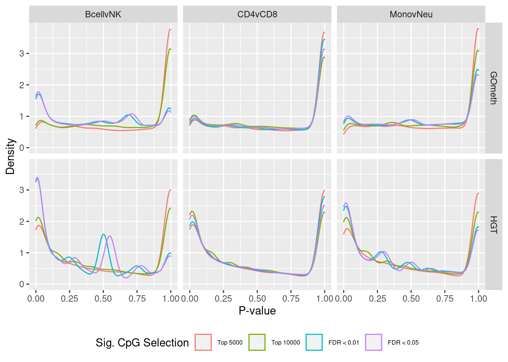
(p[[6]] / p[[7]] / p[[8]] / p[[9]] / p[[10]]) +
plot_annotation(title = unique(sub$contrast)[2],
theme = theme(plot.title = element_text(size = 10))) 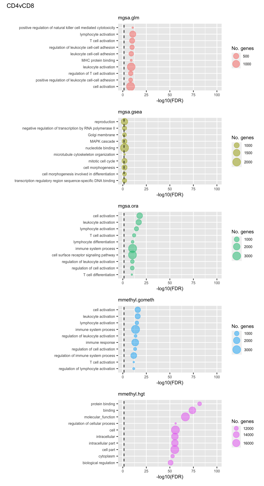
(p[[11]] / p[[12]] / p[[13]] / p[[14]] / p[[15]]) +
plot_annotation(title = unique(sub$contrast)[3],
theme = theme(plot.title = element_text(size = 10))) 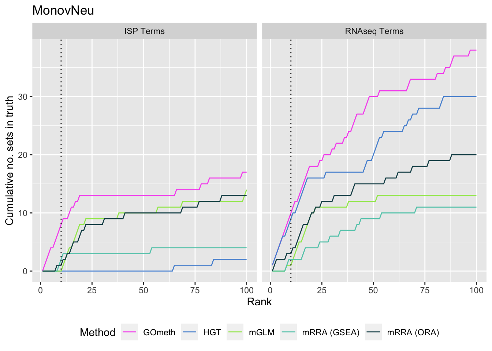
P-value histograms for the different methods for all contrasts on KEGG pathways.
dat %>% filter(set == "KEGG") %>%
filter(sub %in% c("n","c1")) -> sub
ggplot(sub, aes(pvalue, fill = method)) +
geom_histogram(binwidth = 0.025) +
facet_grid(cols = vars(contrast), rows = vars(method)) +
theme(legend.position = "bottom") +
labs(x = "P-value", y = "Frequency", fill = "Method")
Test Broad gene sets
As the ebGSEA method from the ChAMP package only allows testing of their in-built database of Broad Institute gene sets, we will compare to other methods by testing these same gene sets. Note, As methylRRA (GSEA) consistenly performed very poorly in previous comparisons, it is being omitted from the following results.
library(ChAMP)Loading required package: ChAMPdataLoading required package: FEMLoading required package: AnnotationDbi
Attaching package: 'AnnotationDbi'The following object is masked from 'package:dplyr':
selectLoading required package: Matrix
Attaching package: 'Matrix'The following objects are masked from 'package:tidyr':
expand, pack, unpackThe following object is masked from 'package:S4Vectors':
expandLoading required package: marrayLoading required package: corrplotcorrplot 0.84 loadedLoading required package: igraph
Attaching package: 'igraph'The following objects are masked from 'package:dplyr':
as_data_frame, groups, unionThe following objects are masked from 'package:purrr':
compose, simplifyThe following object is masked from 'package:tidyr':
crossingThe following object is masked from 'package:tibble':
as_data_frameThe following object is masked from 'package:Biostrings':
unionThe following objects are masked from 'package:DelayedArray':
path, simplifyThe following object is masked from 'package:GenomicRanges':
unionThe following object is masked from 'package:IRanges':
unionThe following object is masked from 'package:S4Vectors':
unionThe following objects are masked from 'package:BiocGenerics':
normalize, path, unionThe following objects are masked from 'package:stats':
decompose, spectrumThe following object is masked from 'package:base':
unionLoading required package: imputeLoading required package: org.Hs.eg.dbLoading required package: graph
Attaching package: 'graph'The following objects are masked from 'package:igraph':
degree, edges, intersectionThe following object is masked from 'package:stringr':
boundaryThe following object is masked from 'package:Biostrings':
complementWarning: replacing previous import 'igraph::edges' by 'graph::edges' when
loading 'FEM'Warning: replacing previous import 'igraph::intersection' by
'graph::intersection' when loading 'FEM'Warning: replacing previous import 'igraph::degree' by 'graph::degree' when
loading 'FEM'Warning: replacing previous import 'igraph::union' by 'graph::union' when
loading 'FEM'Warning: replacing previous import 'limma::plotMA' by 'BiocGenerics::plotMA'
when loading 'FEM'Warning: replacing previous import 'igraph::path' by 'BiocGenerics::path' when
loading 'FEM'Warning: replacing previous import 'Matrix::which' by 'BiocGenerics::which' when
loading 'FEM'Warning: replacing previous import 'igraph::normalize' by
'BiocGenerics::normalize' when loading 'FEM'Loading required package: DMRcateNo methods found in package 'IRanges' for request: 'splitAsList' when loading 'ensembldb'Registered S3 method overwritten by 'R.oo':
method from
throw.default R.methodsS3Warning: replacing previous import 'minfi::getMeth' by 'bsseq::getMeth' when
loading 'DMRcate'Loading required package: Illumina450ProbeVariants.dbLoading required package: IlluminaHumanMethylationEPICmanifestLoading required package: DTWarning: replacing previous import 'plyr::summarise' by 'plotly::summarise' when
loading 'ChAMP'Warning: replacing previous import 'plyr::rename' by 'plotly::rename' when
loading 'ChAMP'Warning: replacing previous import 'plyr::arrange' by 'plotly::arrange' when
loading 'ChAMP'Warning: replacing previous import 'plyr::mutate' by 'plotly::mutate' when
loading 'ChAMP'Warning: replacing previous import 'plyr::is.discrete' by 'Hmisc::is.discrete'
when loading 'ChAMP'Warning: replacing previous import 'plyr::summarize' by 'Hmisc::summarize' when
loading 'ChAMP'Warning: replacing previous import 'plotly::subplot' by 'Hmisc::subplot' when
loading 'ChAMP'Warning: replacing previous import 'GenomicRanges::sort' by 'globaltest::sort'
when loading 'ChAMP'Warning: replacing previous import 'plotly::last_plot' by 'ggplot2::last_plot'
when loading 'ChAMP'Warning: replacing previous import 'globaltest::model.matrix' by
'stats::model.matrix' when loading 'ChAMP'Warning: replacing previous import 'globaltest::p.adjust' by 'stats::p.adjust'
when loading 'ChAMP'>> Package version 2.16.1 loaded <<
___ _ _ __ __ ___
/ __| |_ /_\ | \/ | _ \
| (__| ' \ / _ \| |\/| | _/
\___|_||_/_/ \_\_| |_|_|
------------------------------
If you have any question or suggestion about ChAMP, please email to champ450k@gmail.com or tianyuan1991hit@gmail.com.
ChAMP paper just get published on Bioconductor! ^_^
Yuan Tian, Tiffany J Morris, Amy P Webster, Zhen Yang, Stephan Beck, Andrew Feber, Andrew E Teschendorff; ChAMP: updated methylation analysis pipeline for Illumina BeadChips, Bioinformatics, btx513, https://doi.org/10.1093/bioinformatics/btx513
--------------------------data(PathwayList)
nGenes <- rownames_to_column(data.frame(n = sapply(PathwayList,
length)),
var = "ID")
dat %>% filter(set == "BROAD") %>%
filter(sub %in% c("n","c1")) %>%
arrange(contrast, method, pvalue) %>%
group_by(contrast, method) %>%
mutate(rank = 1:n()) %>%
mutate(FDR = p.adjust(pvalue)) %>%
filter(rank <= 10) %>%
inner_join(nGenes) -> subJoining, by = "ID"p <- vector("list", length(unique(sub$contrast)) * length(unique(sub$method)))
i = 1
for(cont in unique(sub$contrast)){
c = 1
for(meth in unique(sub$method)){
tmp <- sub %>% filter(contrast == cont & method == meth)
p[[i]] <- ggplot(tmp, aes(x = -log10(FDR), y = rank)) +
geom_point(aes(size = n), alpha = 0.5,
colour = scales::hue_pal()(length(unique(sub$method)))[c]) +
scale_y_continuous(labels = tmp$ID, breaks = tmp$rank) +
labs(y = "", size = "No. genes", title = meth) +
theme(axis.text.y = element_text(size = 6),
plot.title = element_text(size = 8),
legend.position = "right",
legend.key.size = unit(0.25, "cm"),
legend.text = element_text(size = 6),
legend.title = element_text(size = 8),
axis.text.x = element_text(size = 6),
axis.title.x = element_text(size = 8)) +
coord_cartesian(xlim = c(-log10(0.99), -log10(10^-100))) +
geom_vline(xintercept = -log10(0.05), linetype = "dashed")
i = i + 1
c = c + 1
}
}
(p[[1]] / p[[2]] / p[[3]] / p[[4]] / p[[5]] / p[[6]] / p[[7]]) +
plot_annotation(title = unique(sub$contrast)[1],
theme = theme(plot.title = element_text(size = 10))) 
(p[[8]] / p[[9]] / p[[10]] / p[[11]] / p[[12]] / p[[13]] / p[[14]]) +
plot_annotation(title = unique(sub$contrast)[2],
theme = theme(plot.title = element_text(size = 10))) 
(p[[15]] / p[[16]] / p[[17]] / p[[18]] / p[[19]] / p[[20]] / p[[21]]) +
plot_annotation(title = unique(sub$contrast)[3],
theme = theme(plot.title = element_text(size = 10)))  P-value histograms for the different methods for all contrasts on BROAD gene sets.
P-value histograms for the different methods for all contrasts on BROAD gene sets.
dat %>% filter(set == "BROAD") %>%
filter(sub %in% c("n","c1")) -> sub
ggplot(sub, aes(pvalue, fill = method)) +
geom_histogram(binwidth = 0.025) +
facet_grid(cols = vars(contrast), rows = vars(method)) +
theme(legend.position = "bottom") +
labs(x = "P-value", y = "Frequency", fill = "Method")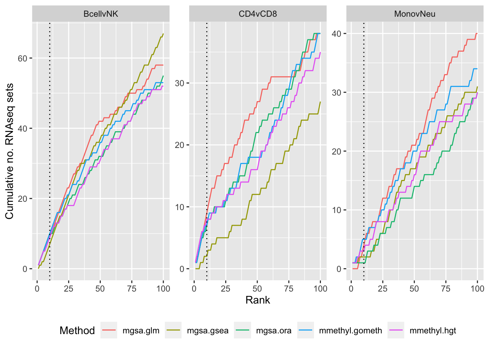
sessionInfo()R version 3.6.1 (2019-07-05)
Platform: x86_64-pc-linux-gnu (64-bit)
Running under: CentOS Linux 7 (Core)
Matrix products: default
BLAS: /config/RStudio/R/3.6.1/lib64/R/lib/libRblas.so
LAPACK: /config/RStudio/R/3.6.1/lib64/R/lib/libRlapack.so
locale:
[1] LC_CTYPE=en_AU.UTF-8 LC_NUMERIC=C
[3] LC_TIME=en_AU.UTF-8 LC_COLLATE=en_AU.UTF-8
[5] LC_MONETARY=en_AU.UTF-8 LC_MESSAGES=en_AU.UTF-8
[7] LC_PAPER=en_AU.UTF-8 LC_NAME=C
[9] LC_ADDRESS=C LC_TELEPHONE=C
[11] LC_MEASUREMENT=en_AU.UTF-8 LC_IDENTIFICATION=C
attached base packages:
[1] stats4 parallel stats graphics grDevices utils datasets
[8] methods base
other attached packages:
[1] ChAMP_2.16.1
[2] DT_0.9
[3] IlluminaHumanMethylationEPICmanifest_0.3.0
[4] Illumina450ProbeVariants.db_1.22.0
[5] DMRcate_2.0.7
[6] FEM_3.14.0
[7] graph_1.62.0
[8] org.Hs.eg.db_3.8.2
[9] impute_1.58.0
[10] igraph_1.2.5
[11] corrplot_0.84
[12] marray_1.62.0
[13] Matrix_1.2-18
[14] AnnotationDbi_1.46.1
[15] ChAMPdata_2.18.0
[16] patchwork_1.0.0
[17] rbin_0.1.2
[18] forcats_0.4.0
[19] stringr_1.4.0
[20] dplyr_0.8.3
[21] purrr_0.3.3
[22] readr_1.3.1
[23] tidyr_1.0.2
[24] tibble_2.1.3
[25] tidyverse_1.3.0
[26] glue_1.3.2
[27] ggplot2_3.3.0
[28] missMethyl_1.20.4
[29] gridExtra_2.3
[30] reshape2_1.4.3
[31] limma_3.42.2
[32] paletteer_1.1.0
[33] minfi_1.32.0
[34] bumphunter_1.26.0
[35] locfit_1.5-9.1
[36] iterators_1.0.12
[37] foreach_1.4.8
[38] Biostrings_2.54.0
[39] XVector_0.24.0
[40] SummarizedExperiment_1.16.1
[41] DelayedArray_0.12.2
[42] BiocParallel_1.20.1
[43] matrixStats_0.56.0
[44] Biobase_2.46.0
[45] GenomicRanges_1.36.1
[46] GenomeInfoDb_1.22.1
[47] IRanges_2.20.2
[48] S4Vectors_0.24.3
[49] BiocGenerics_0.32.0
[50] here_0.1
[51] workflowr_1.6.1
loaded via a namespace (and not attached):
[1] Hmisc_4.2-0
[2] Rsamtools_2.0.1
[3] rprojroot_1.3-2
[4] crayon_1.3.4
[5] jcolors_0.0.4
[6] MASS_7.3-51.5
[7] nlme_3.1-145
[8] backports_1.1.5
[9] reprex_0.3.0
[10] sva_3.34.0
[11] rlang_0.4.5
[12] readxl_1.3.1
[13] DSS_2.34.0
[14] globaltest_5.40.0
[15] bit64_0.9-7
[16] isva_1.9
[17] rngtools_1.4
[18] methylumi_2.30.0
[19] haven_2.2.0
[20] tidyselect_0.2.5
[21] XML_3.98-1.20
[22] nleqslv_3.3.2
[23] GenomicAlignments_1.20.1
[24] xtable_1.8-4
[25] magrittr_1.5
[26] evaluate_0.14
[27] bibtex_0.4.2
[28] cli_2.0.2
[29] zlibbioc_1.30.0
[30] rstudioapi_0.11
[31] doRNG_1.7.1
[32] whisker_0.4
[33] rpart_4.1-15
[34] ensembldb_2.8.0
[35] IlluminaHumanMethylationEPICanno.ilm10b4.hg19_0.6.0
[36] maps_3.3.0
[37] shiny_1.3.2
[38] xfun_0.12
[39] askpass_1.1
[40] clue_0.3-57
[41] multtest_2.40.0
[42] cluster_2.1.0
[43] interactiveDisplayBase_1.22.0
[44] base64_2.0
[45] biovizBase_1.32.0
[46] scrime_1.3.5
[47] dendextend_1.13.4
[48] permute_0.9-5
[49] reshape_0.8.8
[50] withr_2.1.2
[51] lumi_2.38.0
[52] bitops_1.0-6
[53] plyr_1.8.6
[54] cellranger_1.1.0
[55] AnnotationFilter_1.8.0
[56] JADE_2.0-3
[57] pillar_1.4.3
[58] GenomicFeatures_1.36.4
[59] fs_1.3.2
[60] DelayedMatrixStats_1.8.0
[61] vctrs_0.2.4
[62] generics_0.0.2
[63] tools_3.6.1
[64] foreign_0.8-72
[65] munsell_0.5.0
[66] compiler_3.6.1
[67] httpuv_1.5.2
[68] rtracklayer_1.44.4
[69] geneLenDataBase_1.20.0
[70] ExperimentHub_1.12.0
[71] beanplot_1.2
[72] Gviz_1.28.3
[73] pkgmaker_0.27
[74] scico_1.1.0
[75] plotly_4.9.0
[76] GenomeInfoDbData_1.2.1
[77] DNAcopy_1.58.0
[78] edgeR_3.26.8
[79] lattice_0.20-40
[80] later_1.0.0
[81] BiocFileCache_1.10.2
[82] jsonlite_1.6.1
[83] affy_1.62.0
[84] scales_1.1.0
[85] genefilter_1.68.0
[86] lazyeval_0.2.2
[87] promises_1.1.0
[88] doParallel_1.0.15
[89] latticeExtra_0.6-28
[90] R.utils_2.9.0
[91] goseq_1.36.0
[92] checkmate_1.9.4
[93] rmarkdown_2.1
[94] nor1mix_1.3-0
[95] statmod_1.4.32
[96] siggenes_1.60.0
[97] dichromat_2.0-0
[98] BSgenome_1.52.0
[99] HDF5Array_1.14.3
[100] bsseq_1.22.0
[101] survival_2.44-1.1
[102] yaml_2.2.1
[103] htmltools_0.4.0
[104] memoise_1.1.0
[105] VariantAnnotation_1.30.1
[106] quadprog_1.5-8
[107] viridisLite_0.3.0
[108] digest_0.6.25
[109] assertthat_0.2.1
[110] mime_0.9
[111] rappdirs_0.3.1
[112] registry_0.5-1
[113] BiasedUrn_1.07
[114] palr_0.2.0
[115] pals_1.6
[116] RSQLite_2.1.2
[117] mapproj_1.2.6
[118] data.table_1.12.8
[119] blob_1.2.0
[120] R.oo_1.22.0
[121] preprocessCore_1.48.0
[122] fastICA_1.2-2
[123] shinythemes_1.1.2
[124] splines_3.6.1
[125] Formula_1.2-3
[126] labeling_0.3
[127] rematch2_2.1.0
[128] Rhdf5lib_1.6.1
[129] illuminaio_0.28.0
[130] AnnotationHub_2.18.0
[131] ProtGenerics_1.16.0
[132] RCurl_1.95-4.12
[133] broom_0.5.2
[134] hms_0.5.3
[135] modelr_0.1.6
[136] rhdf5_2.28.0
[137] colorspace_1.4-1
[138] base64enc_0.1-3
[139] BiocManager_1.30.10
[140] nnet_7.3-12
[141] GEOquery_2.54.1
[142] Rcpp_1.0.4
[143] mclust_5.4.5
[144] fansi_0.4.1
[145] R6_2.4.1
[146] grid_3.6.1
[147] lifecycle_0.2.0
[148] acepack_1.4.1
[149] oompaBase_3.2.9
[150] kpmt_0.1.0
[151] curl_4.3
[152] affyio_1.54.0
[153] RPMM_1.25
[154] qvalue_2.16.0
[155] ROC_1.62.0
[156] RColorBrewer_1.1-2
[157] IlluminaHumanMethylationEPICanno.ilm10b2.hg19_0.6.0
[158] IlluminaHumanMethylation450kmanifest_0.4.0
[159] htmlwidgets_1.3
[160] biomaRt_2.42.1
[161] rvest_0.3.5
[162] mgcv_1.8-29
[163] openssl_1.4.1
[164] htmlTable_1.13.2
[165] codetools_0.2-16
[166] IlluminaHumanMethylation450kanno.ilmn12.hg19_0.6.0
[167] lubridate_1.7.4
[168] GO.db_3.8.2
[169] gtools_3.8.1
[170] prettyunits_1.0.2
[171] dbplyr_1.4.2
[172] R.methodsS3_1.7.1
[173] gtable_0.3.0
[174] DBI_1.0.0
[175] git2r_0.26.1
[176] wateRmelon_1.30.0
[177] httr_1.4.1
[178] KernSmooth_2.23-15
[179] stringi_1.4.6
[180] progress_1.2.2
[181] farver_2.0.3
[182] annotate_1.62.0
[183] viridis_0.5.1
[184] xml2_1.2.5
[185] combinat_0.0-8
[186] BiocVersion_3.10.1
[187] bit_1.1-14
[188] pkgconfig_2.0.3
[189] ruv_0.9.7.1
[190] knitr_1.28